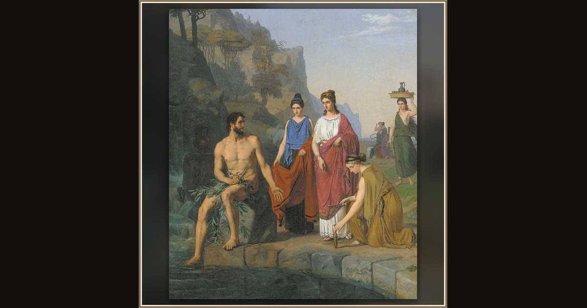

Nausicaa Brings Clothes to the Shipwrecked Odysseus
Heinrich Eddelien · 1821-1852 · Wikimedia Commons
A kneeling maid holds out folded clothes to the branch-covered stranger seated by the waterfall, while another carries a jar on her head toward the cart behind (Od. 6.246-250). Heinrich Eddelien sets the rescue in a Danish Golden-Age gorge; the canvas is undat